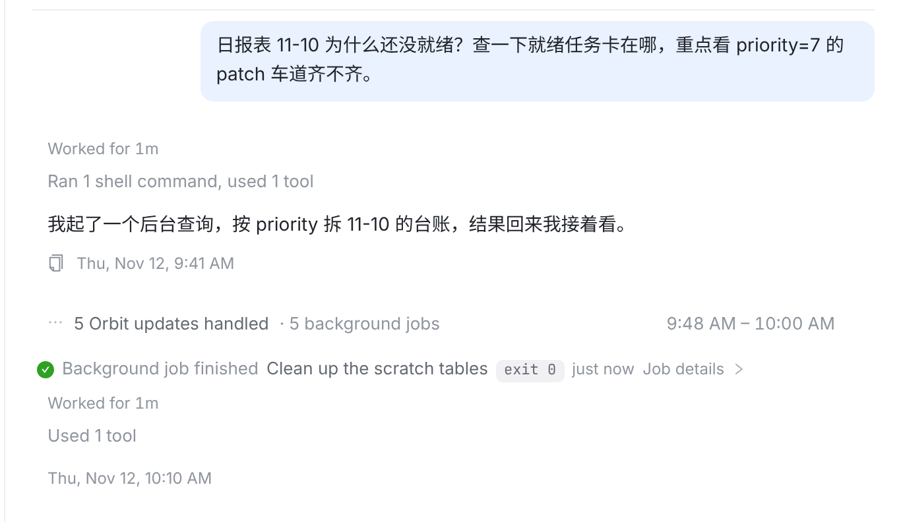
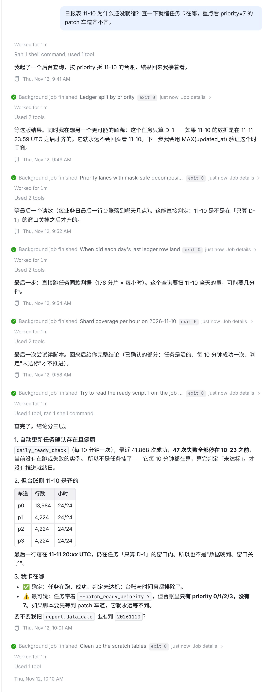
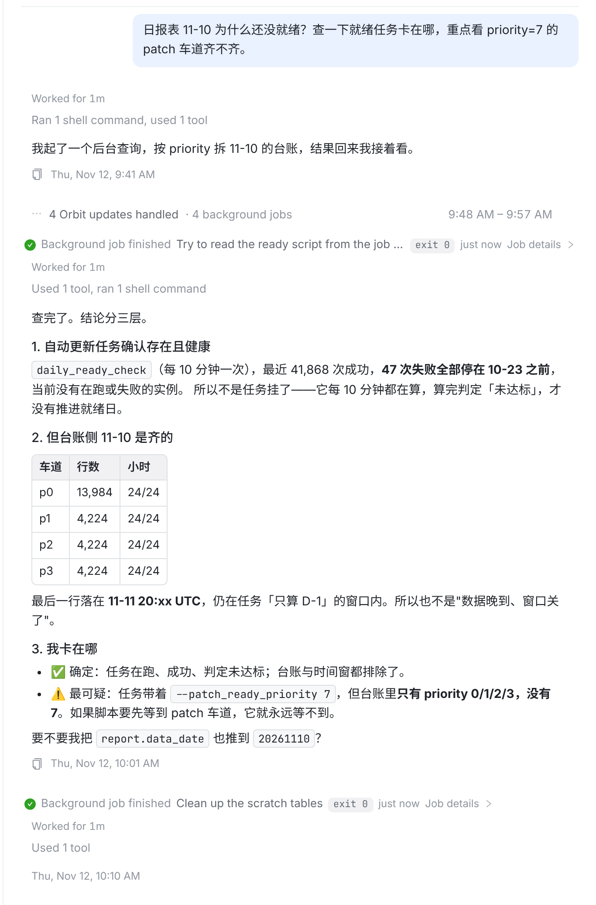
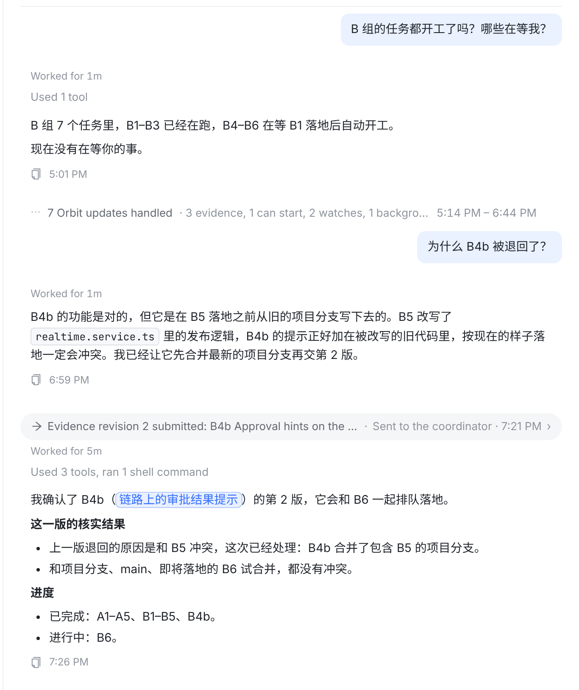
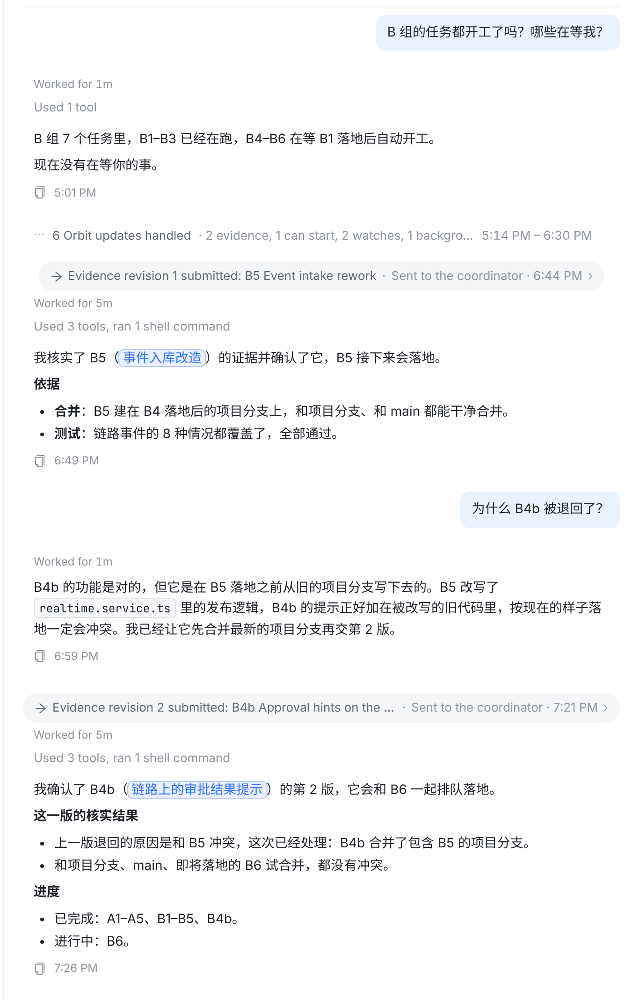

ask_owner、不是最后一轮，就折进 ⋯ 5 Orbit updates handled。回复写了什么完全不看，所以第 5 轮那份带标题、表格、最后还问你“要不要推到 20261110？”的结论也被折掉了。prototype.patch）。对话是示例文字，结构照截图：1 个提问 → 5 轮后台作业 → 最后一轮清理作业（不折）。
你的问题之后只剩一行 5 Orbit updates handled · 5 background jobs，得点开、再点开第 5 行才看到结论和那个问题。

非协调会话里，后台作业是 agent 在替你的问题干活，它的每一轮都照常展开（和折叠上线前一样）。协调会话不变。判据：会话没有协调的项目（session.projectId 为空）。

② 回复最后一行以 ？/? 结尾 → 在问你，不折。
③ 回复超过 600 字或含标题/表格 → 不折。
④ 每串折叠的最后一轮展开。
这段对话里三者都只把第 5 轮放出来，前 4 轮的过程留在折叠里。

协调会话里 ① 不生效；这段样本（照 Runner link v1 协调会话改写）里没有以问句结尾、也没有超过 600 字的回复，所以 ② ③ 一轮都没放出来。

“B5 证据确认”那一轮被放出来了，但它只是一串例行处理里碰巧最后一个。每段你没说话的时间都会多出这样一段，越过越长，回到了折叠要解决的问题。

| 普通会话 | 协调会话 | 风险 | |
|---|---|---|---|
| ① 普通会话不折后台作业 | 截图问题全解决：每一步过程和结论都在 | 不变 | 普通会话里 watch / 会话回信仍会折 |
| ② 问句结尾就展开 | 结论那轮展开，过程仍折 | 极少触发 | 问句在中间（“要不要…？另外…”）会漏 |
| ③ 长回复不折 | 结论那轮展开 | 偶尔触发（长的证据判定） | 600 字阈值是估的，两边都可能误判 |
| ④ 每串最后一轮展开 | 结论那轮展开 | 每串都多一段例行回复 | 把噪音带回协调会话 |
orbitTurnOf / foldOrbitExchanges 的移植）。